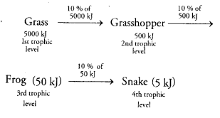

NCERT Solutions For Class 10 Science Chapter 15 Our Environment: Students searching for NCERT solutions for class 10 science chapter 15 notes can refer to this article. Also, students can find our environment class 10 extra questions and answers. Solving these NCERT Solutions For Class 10 Science Chapter 15 Our Environment will not only help students to secure good marks in board exams but also helps in cracking the competitive exams like JEE Main, NEET, JEE Advanced, etc., According to new CBSE Exam Pattern, MCQ Questions for Class 10 Science pdf Carries 20 Marks.
So students are advised to go through this detailed NCERT Solutions For Class 10 Science Chapter 15 Our Environment to build a strong foundation in the subject Science. Read on to find out everything about cbse class 10 biology our environment NCERT Solutions.
- हमारा पर्यावरण कक्षा 10 विज्ञान हिंदी में
- Class 10 Our Environment Important Questions
- Our Environment Class 10 Notes
- Our Environment NCERT Exemplar
- Our Environment Class 10 Extra Questions
- Class 10 Science Our Environment Mind Map
NCERT Solutions for Class 10 Science Chapter 15 Our Environment
Before getting into the details of our environment class 10 extra questions and answers, let’s have an overview of topics and subtopics under Class 10 Science Chapter 15 Our Environment:
- Our Environment
- Eco-System — What Are Its Components?
- How Do Our Activities Affect The Environment?
Free download NCERT Solutions for Class 10 Science Chapter 15 Our Environment PDF in Hindi Medium as well as in English Medium for CBSE, Uttarakhand, Bihar, MP Board, Gujarat Board, and UP Board students, who are using NCERT Books based on updated CBSE Syllabus for the session 2019-20.
NCERT Solutions for Class 10 Science Chapter 15 Intext Questions
Page Number: 260
Question 1
What are trophic levels ? Give an example of food chain and state the different trophic levels in it.
Answer:
Trophic Levels : The various steps in a food chain at which the transfer of food (or energy) takes place are called trophic levels.
Example : A food chain operating in a grassland is given below :
Grass → Insects → Frog → Birds
In this food chain
- Grass represents first trophic level.
- Grasshopper represents second trophic level.
- Frog represents third trophic level.
- Eagle represents fourth tropic level.
Question 2
What is the role of decomposers in the ecosystem ?
Answer:
(i) Decomposers help in decomposing the dead bodies of plants and animals and hence act as cleansing agents of the environment.
(ii) Decomposers also help in putting back the various elements of which dead plants and animals are made, back into the soil, air and water for reuse by the producers like crop plants.
(iii) They help in recycling of the nutrients.
(iv) They decompose dead remains thereby providing space for new life to settle in the biosphere.
Page Number: 262
Question 1
Why are some substances biodegradable and some non-biodegradable ?
Answer:
The microorganism like bacteria and other decomposer organisms (called saprophytes) present in our environment are specific in their action. They break down the materials or products made from natural materials (say, paper) but do not break down man-made materials such as plastics. So, it is due to the property of decomposer organisms of being specific in their action that some waste materials are biodegradable, whereas others are non-biodegradable.
Question 2
Give any two ways in which biodegradable substances would affect the environment.
Answer:
(i) Biodegradable substances are decomposed by the action of microorganisms and decomposed materials are recycled through geo-chemical cycle.
(ii) These substances keep the environment clean.
Question 3
Give any two ways in which non-biodegradable substances would effect the environment.
Answer:
(i) They cause air, water and soil pollution.
(ii) They may cause bio-magnification in the food chain and end up in humans.
Page Number: 264
Question 1
What is ozone and how does it affect any ecosystem ?
Answer:
Ozone (O3) is an isotope of oxygen, i.e., it is a molecule formed by three atoms of oxygen.
At the higher levels of the atmosphere, ozone performs an essential function. It shields the surface of the earth from ultraviolet (UV) radiations from the sun. These radiations are highly damaging to organisms. Ultraviolet rays can cause skin cancer.
Question 2
How can you help in reducing the problem of waste disposal ? Give any two methods.
Answer:
(i) Recycling : The solid wastes like paper, plastics and metals, etc. are recycled.
(ii) Preparation of Compost: Biodegradable domestic wastes such as left over food, fruit and vegetable peels and leaves of potted plants, etc. can be converted into compost by burying in a pit dug into ground.
NCERT Solutions for Class 10 Science Chapter 15 Textbook Chapter End Questions
Question 1
Which of the following groups contain only biodegradable item ?
(a) Grass, flowers and leather
(b) Grass, wood and plastic
(c) Fruit peels, cake and lime juice
(d) Cake, wood and grass
Answer:
(a) Grass, flowers and leather.
Question 2
Which of the following constitutes a food-chain ?
(a) Grass, wheat and mango
(b) Grass, goat and human
(c) Goat, cow and elephant
(d) Grass, fish and goat
Answer:
(b) Grass, goat and human.
Question 3
Which of the following are environment friendly practices ?
(a) Carrying cloth-bags to put purchases in while shopping
(b) Switching off unnecessary lights and fans
(c) Walking to school instead of getting your mother to drop on her scooter
(d) All of the above
Answer:
(d) All of the above.
Question 4
What will happen if we kill all the organisms in one trophic level ?
Answer:
The food chain would end and ecological balance would be affected.
- If the herbivores are killed, then the carnivores would not be able to get food and would die.
- If carnivores are killed, then the population of herbivores would increase to unsustainable level.
- If producers are killed, then the nutrient cycle in that area would not be completed.
Question 5
Will the impact of removing all the organisms in a trophic level be different for different trophic levels ? Can the organisms of any trophic level be removed without causing any damage to the ecosystem ?
Answer:
Yes, the impact of removing all the organisms in a trophic level will be different for different trophic levels. For example, on removing producers; herbivores would not be able to survive or they would migrate and ecosystem would collapse. If herbivores are removed, producers would grow unchecked and carnivores would not get food. If carnivores are removed, herbivores would increase to unsustainable levels and could destroy the producers. If decomposers are removed, the dead animals would pile up due to which the environment would become polluted. In addition to this, if dead animals will not decompose, the recycling of nutrients in the soil will be stopped and its fertility will be reduced. As a result the green cover of the earth will be lost. Thus to maintain the balance of the ecosystem the presence of organisms is necessary at each trophic level.
Question 6
What is biological magnification ? Will the levels of this magnification be different at different levels of the ecosystem ?
Answer:
Biological magnification : The increase in concentration of harmful chemical substances like pesticides in the body of living organisms at each trophic level of a food chain is called biological magnification.
Yes, levels of bio-magnification would increase as the trophic level increases and would be the highest for topmost trophic level. It would affect their biological process such as growth, reproduction, etc.
Question 7
What are the problems caused by the non-biodegradable wastes that we generate ?
Answer:
The problems caused by the non-biodegradable wastes are :
- If the quantity of non-biodegradable matter increases in the nature then bio-magnification of poisonous chemicals in our body increases.
- If the non-biodegradal waste keeps on increasing there will not be left any substance for new organisms.
- The increasing quantity of non-biodegradable waste will cause imbalance of ecosystem.
Question 8
If all the waste we generate is biodegradable, will this have no impact on the environment ? [CBSE 2011, 2013]
Answer:
If all the waste we generate is biodegradable, it will also have impact on the environment. If it is disposed off properly, the problem of air, water and soil pollution can be lessened to an extent. There would be less health problems and humans would be disease-free.
But if it is not disposed off properly, it will affect the environment adversely.
Question 9
Why is damage to the ozone layer a cause for concern ? What steps are being taken to limit this damage ?
Answer:
The damage to the ozone layer is a cause for concern because if the ozone layer in the atmosphere disappears completely, then all the extremely harmful ultraviolet radiations coming from the sun would reach the earth. These ultraviolet radiations would cause skin cancer and other ailments in men and animals and also damage the plants.
In an attempt to protect the ozone layer, the United Nations Environment Programme (UNEP) unanimously forged an agreement among its member countries to freeze CFC production at 1986 levels.
NCERT Solutions for Class 10 Science Chapter 15 Our Environment
Our environment: Eco-system, Environmental problems, Ozone depletion, waste production and their solutions. Biodegradable and non-biodegradable substances.
| Board | CBSE |
| Textbook | NCERT |
| Class | Class 10 |
| Subject | Science |
| Chapter | Chapter 15 |
| Chapter Name | Our Environment |
| Number of Questions Solved | 16 |
| Category | NCERT Solutions |
Formulae Handbook for Class 10 Maths and Science
Page 257
Question 1.
Why are some substances biodegradable and some non-biodegradable ?
Answer:
Substances that are broken down by biological processes are said to be biodegradable. In our environment, many of the substances are broken easily by decomposers (bacteria and fungi) as they possess specific enzymes for such activity. However, there are other substances also which are not broken down in this manner and are known as non-biodegradable substances. Since these substances are not degraded by bacteria and fungi, so they persist for a long time. These non-biodegradable substances will be acted upon by physical processes like heat and pressure.
Question 2.
Give any two ways in which biodegradable substances would affect the environment.
Answer:
- They may produce foul smell during decomposition process.
- They may produce some harmful gases such as ammonia, methane, carbon dioxide, etc., which can further-cause global warming.
More Resources for CBSE Class 10
- NCERT Solutions
- NCERT Solutions for Class 10 Science
- NCERT Solutions for Class 10 Maths
- NCERT Solutions for Class 10 Social
- NCERT Solutions for Class 10 English
- NCERT Solutions for Class 10 Hindi
- NCERT Solutions for Class 10 Sanskrit
- NCERT Solutions for Class 10 Foundation of IT
- RD Sharma Class 10 Solutions
Question 3.
Give any two ways in which non-biodegradable substances would affect the environment.
Answer:
- These inert substances simply persist in the environment. This means that these substances require land area for dumping.
- Excess of fertilizers, pesticides and other chemicals changes soil chemistry and also affects aquatic life.
- Most of these chemicals and heavy metal are easily absorbed by the organisms. This causes biological magnification.
Download NCERT Solutions for Class 10 Science Chapter 15 Our Environment PDF
Page : 261
Question 1.
What are trophic levels? Give an example of a food chain and state the different trophic levels in it.
Answer:
Each step or level of the food chain forms a trophic level. Consider the following food chain:
{kind=link}
Question 2.
What is the role of decomposers in the ecosystem?
Answer:
Role of decomposers in the ecosystem :
- They help in breaking down the complex organic into simple inorganic that go into the soil and are used up by the plants.
- They the nutrient pool of the putting In this way, ad as cleansing agents of nature.
- They help in maintaining the fertility of by adding humus content to it.
Page : 264
Question 1.
What is ozone and how does it affect any ecosystem?
Answer:
Ozone (O3) is a molecule formed by three atoms of oxygen. At the higher of the atmosphere, it shields the surface of the earth from ultraviolet (UV) radiation from the Sun. It may affect any ecosystem in the following ways :
- At the surface of the earth, it is a deadly poison for all lower forms of life.
- If this layer gets depleted, then it may cause cancer in human beings including other plants and animals.
Question 2.
How can you help in reducing the problem of waste disposal? Give any two methods?
Answer:
- By changing our lifestyle and change in attitude will reduce disposable waste.
- Reducing packaging.
- Recycling of waste.
- Preparing compost of biodegradable waste.
Excercise:
Question 1.
Which of the following groups contain only biodegradable items?
(a) Grass, flowers and leather
(b) Grass, wood and plastic
(c) Fruit-peels, cake and lime-juice
(d) Cake, wood and grass
Answer:
(c) Fruit-peels, cake and lime-juice and (d) Cake, wood and grass
Question 2.
Which of the following constitute a food-chain?
(a) Grass, wheat and mango
(b) Grass, goat and human
(c) Goat, cow and elephant
(d) Grass, fish and goat
Answer:
(b) Grass, goat and human
Question 3.
Which of the following are environment-friendly practices?
(a) Carrying cloth-bags to put purchases in while shopping
(b) Switching off unnecessary lights and fans
(c) Walking to school instead of getting your mother to drop you on her scooter
(d) All of the above
Answer:
(d) All of the above
Question 4.
What will happen if we kill all the organisms in one trophic level?
Answer:
If we kill all the organisms in one trophic level, then transfer of energy as well as matter to next higher level will stop. It will lead to over- population at one particular level causing amongst the individuals. This would seriously disturb the food chain and can cause the collapse of an ecosystem even.
Question 5.
Will the impact of removing all the organisms in a trophic level be different for different trophic levels? Can the organisms of any trophic level be removed without causing any damage to the ecosystem?
Answer:
Yes, the impact Of removing all the Organisms in a trophic level will be different for different trophic levels. It will not be possible to remove any organism in any trophic level without causing damage to the ecosystem.
Question 6.
What is biological magnification? Will the levels of this magnification be different at different levels of the ecosystem?
Answer:
The accumulation of harmful chemicals in the body of living organisms at different trophic levels in a food chain is called biological magnification. Yes, the concentration of these harmful chemicals will be different at different trophic levels. It will be maximum at the last trophic levels which is mostly of the top carnivores (quaternary consumers).
Question 7.
What are the problems caused by the non-biodegradable wastes that we generate?
Answer:
(i) Non-biodegradable wastes persist in the environment for a long time and cause greater harm to the various members of the ecosystem by causing biological magnification.
(ii) Non-biodegradable waste such as fertilizers, pesticides, weedicides, etc., changes the soil chemistry. in turn affects the fertility of soil and subsequently reduces the crop yield.
Question 8.
If all the waste we generate is biodegradable, will this have no impact on the environment?
Answer:
Biodegradable waste will be recycled easily by the decomposers such as bacteria and fungi. It will have only this bad impact on our environment that, many Of the gases released during decomposition process may result in global warming.
Question 9.
Why is damage to the ozone layer a cause for concern? What steps are being taken to limit this damage?
Answer:
The ozone shields the surface of the earth from ultraviolet (UV) radiation from the sun. These radiations are highly damaging as they can cause cancer in both plants and animals, damage to eyes and immune system. They can also lead to variations in global rainfall, ecological disturbances and dwindling of global food supplies. Due to these reasons, damage to the ozone layer is a major cause for concern.
Steps which are taken to limit this damage :
- To decrease the use of synthetic chemicals like chlorofluorocarbons (CFCs) which are used as refrigerants and in fire extinguishers.
- In 1987, the United Nations Environment Programme (UNEP) succeeded in reaching an agreement to freeze CFC production at 1986
Multiple Choice Questions (MCQs) [1 Mark each]
Question 1.
Identify the original source of the energy which flows through a food chain?
(a) Carbon dioxide
(b) Glucose
(c) Oxygen
(d) Sunlight
Answer:
(d) All the living organisms get energy directly or indirectly from the sunlight reaching the surface of Earth.
Question 2.
A teacher draws the pyramid of energy on board and writes A, B, C and D, in each trophic level as shown in the diagram given alongside. Which level represents the herbivores?
(a) A
(b) B
(c) C
(d) D
Answer:
(c) The trophic levels represent the transfer of food or energy through various steps or levels in the food chain. Producers harness the maximum energy followed by primary consumers, i.e. a herbivore, which is represented by C in thg given diagram.
Question 3.
Which of the following groups contains only biodegradable items? [NCERT]
(a) Grass, flowers and leather
(b) Grass, wood and plastic
(c) Fruit-peels, cake and lime-juice
(d) Cake, wood and grass
Answer:
(a), (c) and (d) substances that are broken down (decomposed) by the biological processes are said to be biodegradable e.g. fruit-peels, cake, lime-juice, wood, grass, leather, flowers, etc.
Question 4.
Which of the following constitutes a food-chain? [NCERT]
(a) Grass, wheat and mango
(b) Grass, goat and human
(c) Goat, cow and elephant
(d) Grass, fish and goat
Answer:
(b) Each step of food chain form a trophic level. Producers (grass) forms the first trophic level, herbivore (goat) the second and carnivore (human) the third trophic level.
Question 5.
Which of the following are environment- friendly practices? [NCERT]
(a) Carrying cloth-bags to put purchases ‘ while shopping .
(b) Switching off unnecessary light and fans
(c) Walking to school instead of getting your mother to drop you on her scooter
(d) All of the above
Answer:
(d) Cloth-bags are biodegradable, switching off unnecessary light and fans conserves electricity and limited use of petrol/diesel causes less pollution. Hence, all these practices are considered as environment friendly.
Question 6.
Which of the following statements about food chain are correct?
(a) It includes repeated eating, i.e. each group eats the other and is subsequently eaten by some other group of organisms.
(b) It shows a series of branching lines and unidirectional flow of energy.
(c) It shows the unidirectional flow of energy and proceeds in a progressive straight line.
(d) Both (a) and (c)
Answer:
(d) A food chain is a series of organisms in an environment through which energy transfer occurs starting with a producer. It proceeds in straight line. Food chain does not consist of branching lines.
Question 7.
In class, the teacher explained the concept of food chain and energy flow. She made a diagram as given below and asked the students to identify the producer organism in the chain. What do you think will be the student’s answer?
Answer:
(b) Cabbage is the producer component of this chain. It produces food using sunlight and other components by photosynthesis process. Others are all consumers.
Question 8.
An ecosystem includes
(a) all living organisms
(b) non-living objects ,
(c) both living organisms and non-living objects
(d) sometimes living organisms and sometimes non-living objects
Answer:
(c) All the interacting organisms in an area taken together with the non-living constituents of the environment form an ecosystem. Thus, an ecosystem consists of biotic components including all living organisms and abiotic components constituting physical factors like temperature, rainfall, wind, soil and minerals.
Question 9.
In the following groups of materials, which group (s) contains only non-biodegradable items?
(i) Wood, paper, leather
(ii) Polythene, detergent, PVC
(iii) Plastic, detergent, grass
(iv) Plastic, bakelitC DDT
(a) (iii)
(b) (iv)
(c) (i) and (iii)
(d) (ii) and (iv)
Answer:
(d) Substances that cannot be broken down by biological processes in nature are non-biodegradable. e.g. polythene, detergent, PVC, plastics, bakelite, DDT, etc. On the other hand, substances that are broken down (decomposed) by biological processes are said to be biodegradable, e.g. wood, paper, leather, grass, animal bones, etc.
Question 10.
Which of the following statement is incorrect?
(a) All green plants and blue-green algae are producers.
(b) Green plants get their food from organic compounds.
(c) Producers prepare their own food from inorganic compounds.
(d) Plants convert solar energy into chemical energy.
Answer:
(b) Green plants prepare their food from inorganic compounds using radiant energy of the sun in the presence of chlorophyll. All green plants and blue-green algae are called producers as they can prepare food from inorganic substances by photosynthesis. Producers capture the solar energy and convert it into chemical energy.
Question 11.
What will happen if deer is missing in the food chain given below?
Grass → Deer → Tiger
(a) The population of tiger increases.
(b) The population of grass decreases.
(c) Tiger will start eating grass.
(d) The population of tiger decreases and the population of grass increases.
Answer:
(d) If deer is missing in the given food chain, there will not be sufficient food for the tigers. Some of the tigers will die because of starvation and hence, the population of tigers will decrease. Since, grass is eaten by deers, the population of grass will also increase whefl deer is missing.
Question 12.
In a class activity, two students were asked to collect different items from their fellow mates and classify them as biodegradable and non- biodegradable. All the items have been identified except three. Find out which one is non-biodegradable among these?
(a) Jute crafted bag
(b) A sharpner
(c) Empty fevistick
(d) Both (b) and (c)
Answer:
(d) Both (b) and (c), i.e. the sharpener and the empty fevistick container. These products are made from plastic and hence are non-biodegradable.
Question 13.
The diagram shows excretory losses from a rat to the environment.

Which of the following will not be returned to the ecosystem and recycled?
(a) carbon dioxide
(b) heat energy
(c) salts
(d) urea
Answer:
(b) Heat energy cannot be recycled, it gets lost in the environment. The generated is returned through the carbon cycle. Salts are used by living organisms present in the ecosystem. Urea also returns to the nitrogen cycle.
Question 14.
Which of the following limits the number of trophic levels in a food chain?
(a) Decrease in energy at higher trophic levels
(b) Deficient food supply
(c) Polluted air
(d) Water
Answer:
(a) Decrease in energy at higher trophic levels limits the number of trophic levels in a food chain. At each trophic level, a large portion of energy is utilised for the maintenance of organisms that occur at that trophic level. So, organisms at higher level gets less and less energy at successive levels. The. number of trophic levels are limited to 3-4 because after that, the energy available for the next level will be too small, i.e. it will be insufficient to sustain life of the organisms.
Question 15.
If a grasshopper is eaten by a frog, then the energy transfer will be from
(a) producer to decomposer
(b) producer to primary consumer
(c) primary consumer to secondary consumer
(d) secondary consumer to primary consumer
Answer:
(c) In a food chain, if a grasshopper is eaten by a frog, then the energy transfer will be from primary consumer to secondary consumer. Grasshopper feeds on producers i.e. the grass/plants. So, it occupies the level of primary consumer. Frogs, eating grasshopper thus become the secondary consumer.
Question 16.
In the given food chain, suppose the amount of energy at fourth trophic level is 5 kJ, what will be the energy available at the producer level?
Grass → Grasshopper → Frog → Snake → Hawk
(a) 5 kJ
(b) 50 kJ
(c) 500 kJ
(d) 5000 kJ
Answer:
(d) According to 10% law, only 10% of the energy entering a particular trophic level of organisms is available for transfer to the next higher trophic level. In this food chain, at the 4th trophic level, only 5 kJ energy is available to the snake. So, the energy available at the producer level will be 5000 kJ.
It can be shown as

NCERT Solutions for Class 10 Science Chapter 15 Our Environment (Hindi Medium)

Class 10 Science Our Environment Mind Map
Eco-system
It is defined as functional unit of nature, where living organisms interact among themselves and also with the surrounding physical environment.
Hence, there are two main components of the ecosystem:
Biotic: Living organisms such as plants, animals, microorganisms and humans.
Abiotic: It includes physical factors such as temperature, rainfall, wind, soil and minerals.
Examples of natural ecosystem: forests, ponds, lakes, etc, and human made or artificial ecosystems are gardens, crop-fields, aquarium etc.
Ecosystem consists of various organisms which can be classified as producers and consumers.
Producers are the organisms which make organic compounds like sugar, starch, etc from inorganic substances with the help of sunlight and chlorophyll.
Consumers are the organisms which are dependent on producers for their nutrition. They can be grouped as herbivores, carnivores, omnivores, parasites, and decomposers.
Decomposers are the microorganisms (bacteria & fungi) which break down complex organic substances (dead remains & waste material of living organisms) into simpler inorganic substances that go back into the soil and are used up again by the plants.
Thus, they help in proper cycling of the nutrients in an ecosystem.
Have you ever wondered why we need to clean aquarium but not lakes or ponds?
It is because aquarium is an artificial and incomplete system which lacks producers, food chains, and decomposers.
Hence, it lacks natural nutrients recycling and self¬cleaning abilities. In contrast lake or ponds are natural and complete ecosystem where there is perfect recycling of nutrients and thus does not need to be cleaned very often.
Waste Material
Waste material can be broadly classified into two categories depending on their degradation:
Biodegradable Waste
- These are the wastes that can be broken down into simpler compounds by the action of bacteria or other saprophytes.
- In addition, physical processes such as high temperature and pressure also act on them however, under ambient conditions these substances persist in our environment for a very long time.
- Some examples of such wastes are food materials, kitchen wastes, and other natural wastes.
- Non-biodegradable Waste
- These are the substances that are not broken down into simpler compounds by the action of microorganisms.
- These substances may be inert and simply persist in the environment for a long time or may harm the various members of the eco-system.
- They are the main causes of air, water and soil pollution and diseases like cancer.
- Some examples of such waste are plastic, cans, metals, and chemicals for agricultural and industrial purposes.
Food Chains And Webs
In an ecosystem, there exists a series of organisms feeding on one another. This series or organisms taking part at various biotic levels form a food chain. Alternatively, food chain can be defined as a linear network of food or energy flow starting from producer and ending at apex predator.
Trophic Level
Based on the source of their nutrition or food, organisms occupy a specific place in food chain that is known as their trophic level. There are usually four trophic levels:
- I trophic level: It includes producers or autotrophs for e.g. phytoplankton, grass, trees etc.
- II trophic level: It includes primary consumer or herbivores for e.g. zooplanktons, grasshoppers, cow etc.
- III trophic level: It includes secondary consumer or small carnivore for e.g. birds, fishes, wolf etc.
- IV trophic level: It includes tertiary consumers or larger carni vores for e.g. level lion, tiger, man etc.
Energy Flow
- The flow of energy is unidirectional.
- The green plants in a terrestrial ecosystem capture about 1 % of the energy of sunlight that falls on their leaves and convert it into food energy.
- On an average only 10% organic matter is present at each step and reaches the next level of consumers. It is because a great deal of energy is lost as heat to the environment and rest goes into digestion, in doing work and in growth & reproduction.
- In addition, the loss of energy at each step is so great that very little usable energy remains after four trophic levels and this is the reason that a food chain usually contain maximum of four trophic levels.
- Generally, there are greater number of individuals at lower trophic levels of an ecosystem (the greatest number is of the producers)
- The length and complexity of food chains vary greatly.
- Each organism is generally eaten by two or more other kinds of organisms which in turn are eaten by several other organisms.
- So instead of a straight line food chain, the relationship can be shown as a series of branching lines called a food web.
Environmental Problems
Depletion of the ozone layer: Ozone (O3) is a molecule formed by three atoms of oxygen. It is located in upper part of the atmosphere called stratosphere and it acts as shield absorbing UV radiation from sun.
- At higher levels of atmosphere, high energy UV radiations split apart some moleculer oxygen (O2) into free oxygen (O) atoms. These atoms then combine with the molecular oxygen to form ozone.
- Ozone depletion permits entry of harmful UV radiations which lead to diseases like skin aging, irritation & cancer, snow- blindness, cataract, etc.
- Ozone-depleting substances: CFCs, HCFCs, hydrobromofluorocarbons, etc.
Waste disposal: Improvements in our life-style have resulted in greater amounts of waste material generation. For e.g. increased use of disposable items, plastic bags, packing materials etc have resulted in much of our waste becoming non-biodegradable.
Following methods can be helpful in managing the garbage we produce: categorization of waste materials into biodegradable, recyclable & non-biodegradable, reduction in use of non- biodegradable substances such as plastics, thermocol etc, burning & proper dumping of waste.
It is interesting note that how unknowingly some harmful chemicals enter our bodies through the food chain.
It happens by two ways:
Overuse of several pesticides: These chemicals are either washed down into the soil or into the waterbodies.
From the soil, these are absorbed by the plants along with water and minerals, and from the water bodies these are taken up by aquatic plants and animals
Biological magnification: It is defined as an increase in the concentration of the toxicant at successive trophic levels.
These chemicals are not degradable and the organism can neither metabolize nor excrete them and thus they get accumulated progressively at each trophic level.
In addition, human beings occupy the top level in any food chain and thus a maximum concentration of these chemicals gets accumulated in our bodies.
Now that you are provided all the detailed information regarding NCERT Solutions For Class 10 Science Chapter 15 Our Environment and we hope this detailed article on class 10 science chapter 15 NCERT solutions is helpful. If you have any questions regarding this article or NCERT Solutions For Class 10 Science Chapter 15 Our Environment, drop your comments in the comment box below and we will get back to you as soon a possible.
NCERT Solutions for Class 10 Science All Chapters
- Chapter 1 Chemical Reactions and Equations
- Chapter 2 Acids, Bases and Salts
- Chapter 3 Metals and Non-metals
- Chapter 4 Carbon and Its Compounds
- Chapter 5 Periodic Classification of Elements
- Chapter 6 Life Processes
- Chapter 7 Control and Coordination
- Chapter 8 How do Organisms Reproduce?
- Chapter 9 Heredity and Evolution
- Chapter 10 Light Reflection and Refraction
- Chapter 11 Human Eye and Colourful World
- Chapter 12 Electricity
- Chapter 13 Magnetic Effects of Electric Current
- Chapter 14 Sources of Energy
- Chapter 15 Our Environment
- Chapter 16 Management of Natural Resources